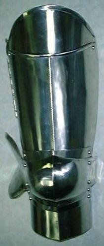
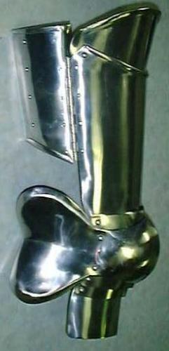
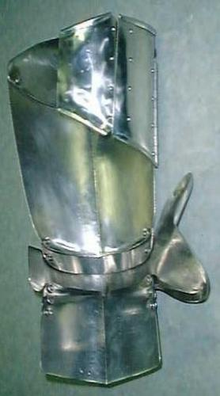
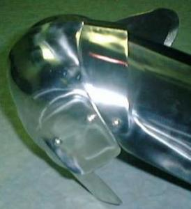
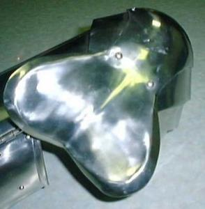

Mid-15th Century Italian style leg harnesses






Mid-15th Century Italian style leg harnesses:
Size: Medium
Length: 32 inch inseam
Completed: July 3, 1999
They are made from 304 stainless
steel. The demi-greave, 2 lanes below the knee cop, and the last (outer)
wrap plate are 18ga. and the rest is 16ga..
They are more or less based
on the legs seen in the Churburg catalog on suit #18. They are also shown
in Arms and Armour of the Medieval Knight By David Edge on a Mid-15th
Century Italian suite. A line drawing of the suite is on the following
page. Another line drawing of them can be seen in European Armour:
circa 1066 to circa 1700 by Claude Blair.
Note the differences between
the two line drawings and the pictures. The line draw in Arms
and Armour of the Medieval Knight seems to have mistakes. It
shows the plate at the top of the cuisse extending down the side and the
wrap plates being attached to it.
Knees with demi-cuisse Finished Nov. 1999
Updated Patterns on Aug. 27, 1999
Updated Patterns on Nov. 28, 1999
(changed lame above knee and added pattern for a demi-cuisse)
I would build these legs in the following order:
1) cut out the plates
2) punch any holes which are on the patterns
3) finish the plate edges and corners
4) Roll the top edge of the cuisse and upper cuisse plates.
Roll the top and bottom edge of the two wrap plates.
5) Dish knee cop and shape the wing on the knee cop. Shape
the other plates.
6) Add a crease down the center of the legs.
7) Fine tune the articulation
8) Polish the plates
9) Assemble the legs
10) Add the straps
Copyright 1999 Craig W. Nadler All rights reserved